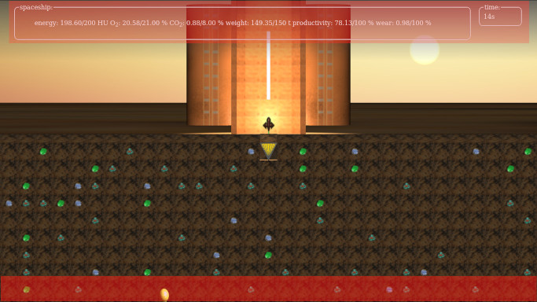

Help: How to use the gui
The main userinterface is hidden per default. Only the headup-gui is visible all the time. By clicking on the headup-gui or the top of the menu rocket visible at the bottom of the screen, the game menu will slide up. To hide the settings, simply click again. The clickable areas are marked in the picture below. Getting started
First steps
To achieve the game's task, you need to get a central mining tunnel for the workers. Otherwise it is impossible to mine the resources. Take a good look at the map and decide, where it is most rewarding to mine. Then open the game menu and select with the slider placed in the fieldset "main drill depth" the desired drilling depth. Confirm your choice by clicking on the "Start main drill!" button. The drill will start working; the progress will be displayed in the fieldset. As soon as the first blocks are removed, the destination for the worker can be set by simply hiding the menu and clicking on the desired block that should be removed. If your choice is not yet reachable by a horizontal tunnel, don't worry, the miner will remove all blocks between himself and the destination. If you feel the need, you can always go deeper if necessecary (up until you reach the main drill limit).A short introduction to the resource system
The basic principle of the game is very simple: Everything consumes resources. The player's task is yet to minimize the consumption, but still being able to mine 15 t of copper ore and – if possible – refine it to copper ingots.
Your main constraints are:
- Keep the energy above 50 HU,
- Keep the CO2 below 8 %,